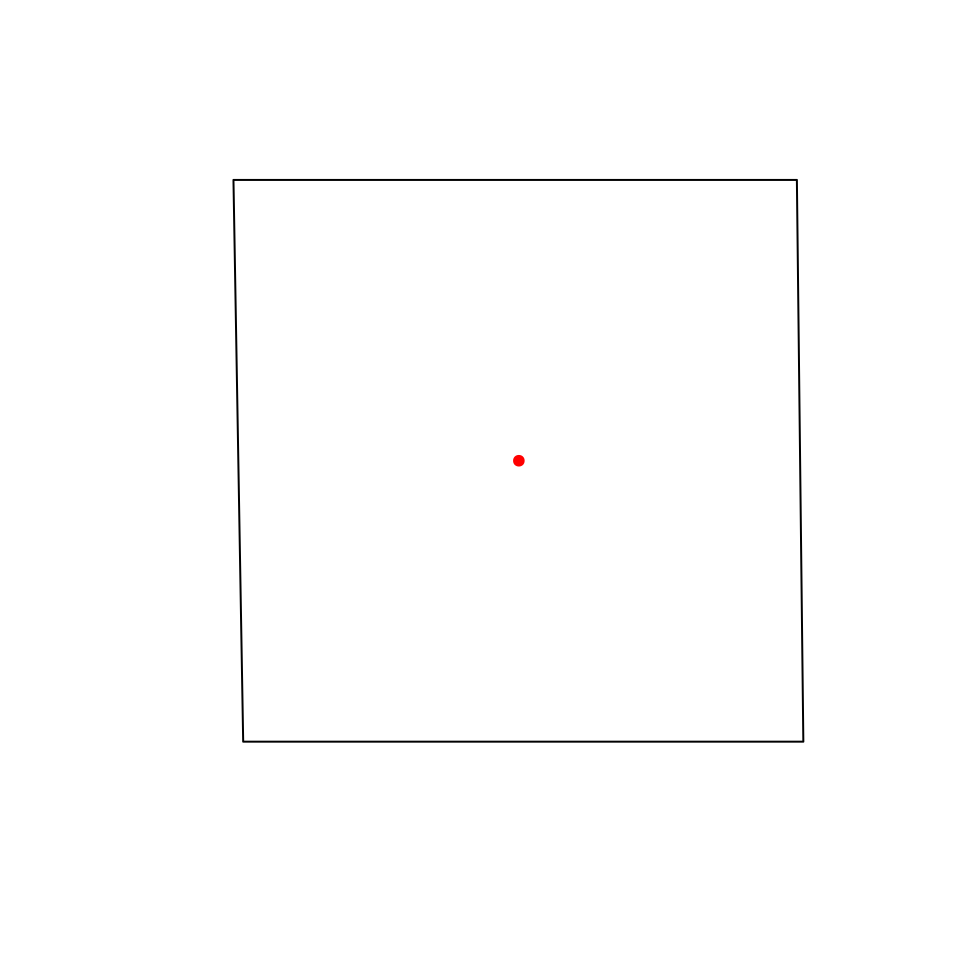

vignettes/modistools-vignette.Rmd
modistools-vignette.RmdThe MODISTools package has as goal to facilitate the interface between R and the MODIS Land Product Subset API at the Oak Ridge National Laboratory Distributed Active Archive Center (DAAC). This programmatic interface to the ‘MODIS Land Products Subsets’ web services allows for easy downloads of ‘MODIS’ time series (of single pixels or small regions of interest) directly to your R workspace or your computer. Below an example is provided on how to download a MODIS time series as well as list ancillary data.
In order to assess which products are available, which product bands
are provided and which temporal range is covered one has to list these
ancillary data. All these options can be queried using the
mt_*() functions.
To list all available products use the mt_products()
function.
products <- mt_products()
head(products)
#> product
#> 1 Daymet
#> 2 ECO4ESIPTJPL
#> 3 ECO4WUE
#> 4 GEDI03
#> 5 GEDI04_B
#> 6 MCD12Q1
#> description
#> 1 Daily Surface Weather Data (Daymet) on a 1-km Grid for North America, Version 4 R1
#> 2 ECOSTRESS Evaporative Stress Index PT-JPL (ESI) Daily L4 Global 70 m
#> 3 ECOSTRESS Water Use Efficiency (WUE) Daily L4 Global 70 m
#> 4 GEDI Gridded Land Surface Metrics (LSM) L3 1km EASE-Grid, Version 2
#> 5 GEDI Gridded Aboveground Biomass Density (AGBD) L4B 1km EASE-Grid, Version 2
#> 6 MODIS/Terra+Aqua Land Cover Type (LC) Yearly L3 Global 500 m SIN Grid
#> frequency resolution_meters
#> 1 1 day 1000
#> 2 Varies 70
#> 3 Varies 70
#> 4 One time 1000
#> 5 One time 1000
#> 6 1 year 500Once you have settled on the product you want to use in your analysis
you will have to select a band, or multiple bands you want to download
for a given location. To list all available bands for a given product
use the mt_bands() function. You can use the mt_bands()
function to list all available bands for a given product. Below I list
all bands for the MOD13Q1 vegetation index product.
bands <- mt_bands(product = "MOD13Q1")
head(bands)
#> band description
#> 1 250m_16_days_blue_reflectance Surface Reflectance Band 3
#> 2 250m_16_days_composite_day_of_the_year Day of year VI pixel
#> 3 250m_16_days_EVI 16 day EVI average
#> 4 250m_16_days_MIR_reflectance Surface Reflectance Band 7
#> 5 250m_16_days_NDVI 16 day NDVI average
#> 6 250m_16_days_NIR_reflectance Surface Reflectance Band 2
#> units valid_range fill_value scale_factor add_offset
#> 1 reflectance 0 to 10000 -1000 0.0001 0
#> 2 Julian day of the year 1 to 366 -1 <NA> <NA>
#> 3 EVI ratio - No units -2000 to 10000 -3000 0.0001 0
#> 4 reflectance 0 to 10000 -1000 0.0001 0
#> 5 NDVI ratio - No units -2000 to 10000 -3000 0.0001 0
#> 6 reflectance 0 to 10000 -1000 0.0001 0Note the band names (listed in band column) you want to download, this variable will need to be passed in the final download statement.
Similarly you can list all available dates (temporal coverage) for a
given product and location defined using a latitude and longitude with
the mt_dates() function.
Once you decide on which data to download using the above functions
you can use these parameters to download a time series using the
mt_subset() function. The below query downloads MOD15A2H
based leaf area index (LAI) data for the year 2014 for an area around
the Arcachon basin in the south west of France. We will also download
land cover data (MCD12Q1, IGBP) at a similar scale. The location is
named ‘arcachon’. The output is saved to a variables called subset and
LC in the R workspace (as defined by the parameter internal = TRUE, when
set to FALSE the data is written to file). Keep in mind that this
operation might take a while.
# download the MODIS land cover (IGBP) and NDVI data
# for a region around the French city and basin of Arcachon
arcachon_lai <- mt_subset(product = "MOD15A2H",
lat = 44.656286,
lon = -1.174748,
band = "Lai_500m",
start = "2004-01-01",
end = "2004-12-30",
km_lr = 20,
km_ab = 20,
site_name = "arcachon",
internal = TRUE,
progress = FALSE
)
arcachon_lc <- mt_subset(
product = "MCD12Q1",
lat = 44.656286,
lon = -1.174748,
band = "LC_Type1",
start = "2004-01-01",
end = "2004-3-20",
km_lr = 20,
km_ab = 20,
site_name = "arcachon",
internal = TRUE,
progress = FALSE
)The output format is a tidy data frame, as shown above. When
witten to a csv with the parameter internal = FALSE this
will result in a flat file on disk.
head(arcachon_lai)
#> xllcorner yllcorner cellsize nrows ncols band units scale
#> 1.1 -111658.35 4946789.87 463.312716528 81 81 Lai_500m m^2/m^2 0.1
#> 2.1 -111658.35 4946789.87 463.312716528 81 81 Lai_500m m^2/m^2 0.1
#> 3.1 -111658.35 4946789.87 463.312716528 81 81 Lai_500m m^2/m^2 0.1
#> 4.1 -111658.35 4946789.87 463.312716528 81 81 Lai_500m m^2/m^2 0.1
#> 5.1 -111658.35 4946789.87 463.312716528 81 81 Lai_500m m^2/m^2 0.1
#> 6.1 -111658.35 4946789.87 463.312716528 81 81 Lai_500m m^2/m^2 0.1
#> latitude longitude site product start end complete
#> 1.1 44.65629 -1.174748 arcachon MOD15A2H 2004-01-01 2004-12-30 TRUE
#> 2.1 44.65629 -1.174748 arcachon MOD15A2H 2004-01-01 2004-12-30 TRUE
#> 3.1 44.65629 -1.174748 arcachon MOD15A2H 2004-01-01 2004-12-30 TRUE
#> 4.1 44.65629 -1.174748 arcachon MOD15A2H 2004-01-01 2004-12-30 TRUE
#> 5.1 44.65629 -1.174748 arcachon MOD15A2H 2004-01-01 2004-12-30 TRUE
#> 6.1 44.65629 -1.174748 arcachon MOD15A2H 2004-01-01 2004-12-30 TRUE
#> modis_date calendar_date tile proc_date pixel value
#> 1.1 A2004001 2004-01-01 h17v04 2015085012715 1 254
#> 2.1 A2004009 2004-01-09 h17v04 2015085075443 1 254
#> 3.1 A2004017 2004-01-17 h17v04 2015085081742 1 254
#> 4.1 A2004025 2004-01-25 h17v04 2015112185738 1 254
#> 5.1 A2004033 2004-02-02 h17v04 2015085192313 1 254
#> 6.1 A2004041 2004-02-10 h17v04 2015086043310 1 254
head(arcachon_lc)
#> xllcorner yllcorner cellsize nrows ncols band units
#> 1.1 -111658.35 4946789.87 463.312716528 81 81 LC_Type1 class
#> 1.2 -111658.35 4946789.87 463.312716528 81 81 LC_Type1 class
#> 1.3 -111658.35 4946789.87 463.312716528 81 81 LC_Type1 class
#> 1.4 -111658.35 4946789.87 463.312716528 81 81 LC_Type1 class
#> 1.5 -111658.35 4946789.87 463.312716528 81 81 LC_Type1 class
#> 1.6 -111658.35 4946789.87 463.312716528 81 81 LC_Type1 class
#> scale latitude longitude site product start end
#> 1.1 Not Available 44.65629 -1.174748 arcachon MCD12Q1 2004-01-01 2004-3-20
#> 1.2 Not Available 44.65629 -1.174748 arcachon MCD12Q1 2004-01-01 2004-3-20
#> 1.3 Not Available 44.65629 -1.174748 arcachon MCD12Q1 2004-01-01 2004-3-20
#> 1.4 Not Available 44.65629 -1.174748 arcachon MCD12Q1 2004-01-01 2004-3-20
#> 1.5 Not Available 44.65629 -1.174748 arcachon MCD12Q1 2004-01-01 2004-3-20
#> 1.6 Not Available 44.65629 -1.174748 arcachon MCD12Q1 2004-01-01 2004-3-20
#> complete modis_date calendar_date tile proc_date pixel value
#> 1.1 TRUE A2004001 2004-01-01 h17v04 2018054103350 1 17
#> 1.2 TRUE A2004001 2004-01-01 h17v04 2018054103350 2 17
#> 1.3 TRUE A2004001 2004-01-01 h17v04 2018054103350 3 17
#> 1.4 TRUE A2004001 2004-01-01 h17v04 2018054103350 4 17
#> 1.5 TRUE A2004001 2004-01-01 h17v04 2018054103350 5 17
#> 1.6 TRUE A2004001 2004-01-01 h17v04 2018054103350 6 17Note that when a a region is defined using km_lr and km_ab multiple
pixels might be returned. These are indexed using the pixel
column in the data frame containing the time series data. The remote
sensing values are listed in the value column. When no band
is specified all bands of a given product are returned, be mindful of
the fact that different bands might require different multipliers to
represent their true values.
When a large selection of locations is needed you might benefit from
using the batch download function mt_batch_subset(), which
provides a wrapper around the mt_subset() function in order
to speed up large download batches. This function has a similar syntax
to mt_subset() but requires a data frame defining site
names (site_name) and locations (lat / lon) (or a comma delimited file
with the same structure) to specify a list of download locations.
# create data frame with a site_name, lat and lon column
# holding the respective names of sites and their location
df <- data.frame("site_name" = paste("test",1:2), stringsAsFactors = FALSE)
df$lat <- 40
df$lon <- -110
# an example batch download data frame
head(df)
#> site_name lat lon
#> 1 test 1 40 -110
#> 2 test 2 40 -110
# test batch download
subsets <- mt_batch_subset(df = df,
product = "MOD13Q1",
band = "250m_16_days_NDVI",
km_lr = 1,
km_ab = 1,
start = "2004-01-01",
end = "2004-12-30",
internal = TRUE)The below example processes the data downloaded above to look at differences in the seasonal changes in leaf area index (LAI, or the amount of leaves per unit ground area) for the Arcachon bay in south-west France. To do this we merge the land cover and LAI data on a pixel by pixel basis.
# merge land cover and lai data
arcachon <- arcachon_lc %>%
rename("lc" = "value") %>%
select("lc","pixel") %>%
right_join(arcachon_lai, by = "pixel")Then, filter out all non valid values (> 100), only select evergreen and deciduous land cover classes (1 and 5, or, ENF and DBF respectivelly), convert them to more readable labels, and across these land cover classes take the median per acquisition date.
# create a plot of the data - accounting for the multiplier (scale) component
arcachon <- arcachon %>%
filter(value <= 100,
lc %in% c("1","5")) %>% # retain everything but fill values
mutate(lc = ifelse(lc == 1, "ENF","DBF")) %>%
group_by(lc, calendar_date) %>% # group by lc and date
summarize(doy = as.numeric(format(as.Date(calendar_date)[1],"%j")),
lai_mean = median(value * as.double(scale)))
#> `summarise()` has grouped output by 'lc'. You can override using the `.groups`
#> argument.Finally, the plot will show you the seasonal time series of LAI for both land cover classes (ENF and DBF). Note the difference in timing and amplitude between both these forest types, where the evergreen (ENF) pixels show lower LAI values and a more gradual seasonal pattern compared to the deciduous trees.
# plot LAI by date and per land cover class
ggplot(arcachon, aes(x = doy, y = lai_mean)) +
geom_point() +
geom_smooth(span = 0.3, method = "loess") +
labs(x = "day of year (DOY)",
y = "leaf area index (LAI)") +
theme_minimal() +
facet_wrap(~ lc)
#> `geom_smooth()` using formula = 'y ~ x'
Corner coordinates of the pixel area extracted are provided, these can be used to calculate the coverage of the extracted area. Coordinates are provided in the original sinusoidal grid coordinates and first have to be transformed into latitude longitude (for convenience).
# convert the coordinates
lat_lon <- sin_to_ll(arcachon_lc$xllcorner, arcachon_lc$yllcorner)
# bind with the original dataframe
subset <- cbind(arcachon_lc, lat_lon)
head(subset)
#> xllcorner yllcorner cellsize nrows ncols band units
#> 1.1 -111658.35 4946789.87 463.312716528 81 81 LC_Type1 class
#> 1.2 -111658.35 4946789.87 463.312716528 81 81 LC_Type1 class
#> 1.3 -111658.35 4946789.87 463.312716528 81 81 LC_Type1 class
#> 1.4 -111658.35 4946789.87 463.312716528 81 81 LC_Type1 class
#> 1.5 -111658.35 4946789.87 463.312716528 81 81 LC_Type1 class
#> 1.6 -111658.35 4946789.87 463.312716528 81 81 LC_Type1 class
#> scale latitude longitude site product start end
#> 1.1 Not Available 44.65629 -1.174748 arcachon MCD12Q1 2004-01-01 2004-3-20
#> 1.2 Not Available 44.65629 -1.174748 arcachon MCD12Q1 2004-01-01 2004-3-20
#> 1.3 Not Available 44.65629 -1.174748 arcachon MCD12Q1 2004-01-01 2004-3-20
#> 1.4 Not Available 44.65629 -1.174748 arcachon MCD12Q1 2004-01-01 2004-3-20
#> 1.5 Not Available 44.65629 -1.174748 arcachon MCD12Q1 2004-01-01 2004-3-20
#> 1.6 Not Available 44.65629 -1.174748 arcachon MCD12Q1 2004-01-01 2004-3-20
#> complete modis_date calendar_date tile proc_date pixel value
#> 1.1 TRUE A2004001 2004-01-01 h17v04 2018054103350 1 17
#> 1.2 TRUE A2004001 2004-01-01 h17v04 2018054103350 2 17
#> 1.3 TRUE A2004001 2004-01-01 h17v04 2018054103350 3 17
#> 1.4 TRUE A2004001 2004-01-01 h17v04 2018054103350 4 17
#> 1.5 TRUE A2004001 2004-01-01 h17v04 2018054103350 5 17
#> 1.6 TRUE A2004001 2004-01-01 h17v04 2018054103350 6 17
#> longitude_ll latitude_ll
#> 1.1 -1.407572 44.4875
#> 1.2 -1.407572 44.4875
#> 1.3 -1.407572 44.4875
#> 1.4 -1.407572 44.4875
#> 1.5 -1.407572 44.4875
#> 1.6 -1.407572 44.4875Together with meta-data regarding cell size, number of columns and rows the bounding box of the extracted data can be calculated.
# convert to bounding box
bb <- apply(arcachon_lc, 1, function(x){
mt_bbox(xllcorner = x['xllcorner'],
yllcorner = x['yllcorner'],
cellsize = x['cellsize'],
nrows = x['nrows'],
ncols = x['ncols'])
})
# plot one bounding box
plot(bb[[1]])
# add the location of the queried coordinate within the polygon
points(arcachon_lc$longitude[1],
arcachon_lc$latitude[1],
pch = 20,
col = "red")
Although the package is often used to deal with single pixel
locations the provisions to download a small region of interest defined
by kilometers left-right (west-east) or top-bottom (north-south) allows
you to grab small geographic regions for further analysis. The default
tidy dataframe format isn’t ideal for visualizing this inherently
spatial data. Therefore a helper function mt_to_raster() is
available to convert the tidy dataframe to a gridded (georeferenced)
raster format.
Below a small region (20x20km) is downloaded around the seaside town
of Arcachon, France for the MODIS land cover
product (MCD12Q1). The data is converted using
mt_to_raster() with a reproject parameter set to true to
plot latitude and longitude coordinates (instead of the default
sinusoidal ones).
# convert to raster, when reproject is TRUE
# the data is reprojected to lat / lon if FALSE
# the data is shown in its original sinuidal projection
LC_r <- mt_to_terra(df = arcachon_lc, reproject = TRUE)
#> Error: [write] unknown option(s): crs
# plot the raster data as a map
plot(LC_r)
#> Error in h(simpleError(msg, call)): error in evaluating the argument 'x' in selecting a method for function 'plot': object 'LC_r' not found